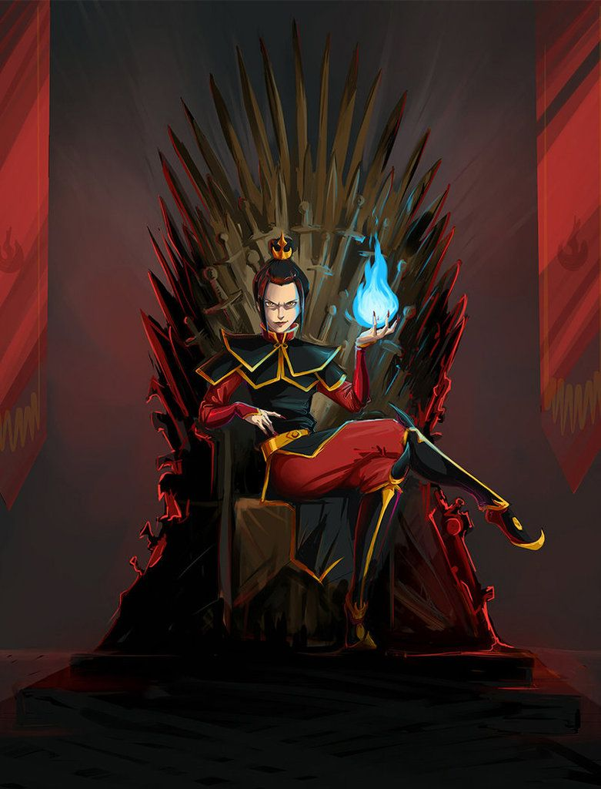
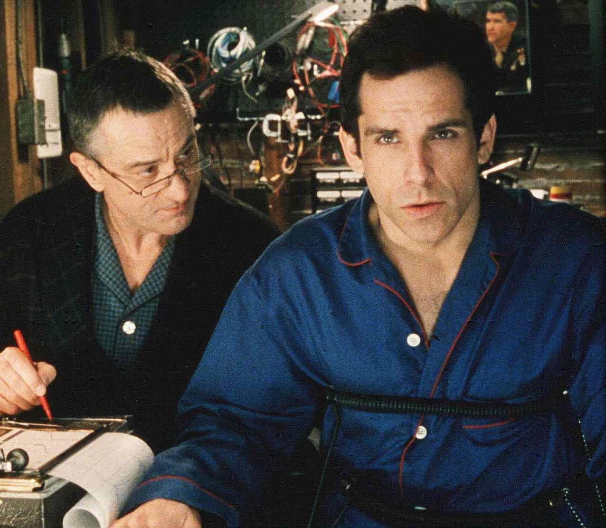
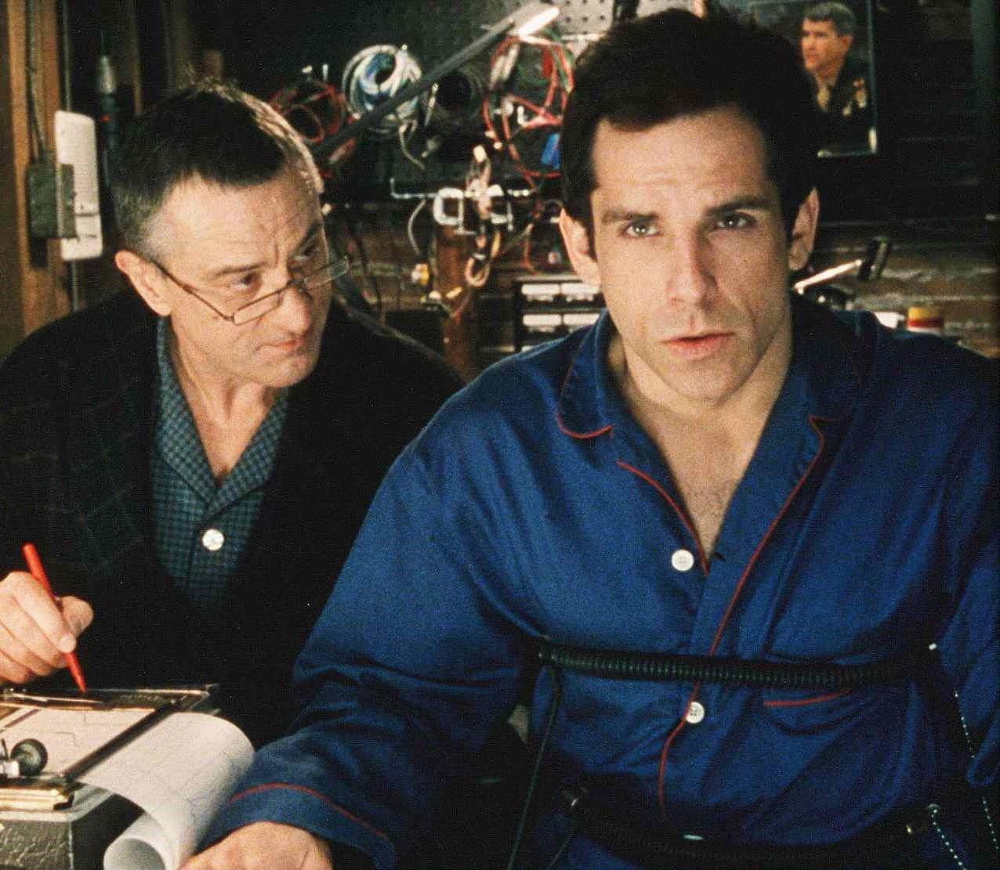
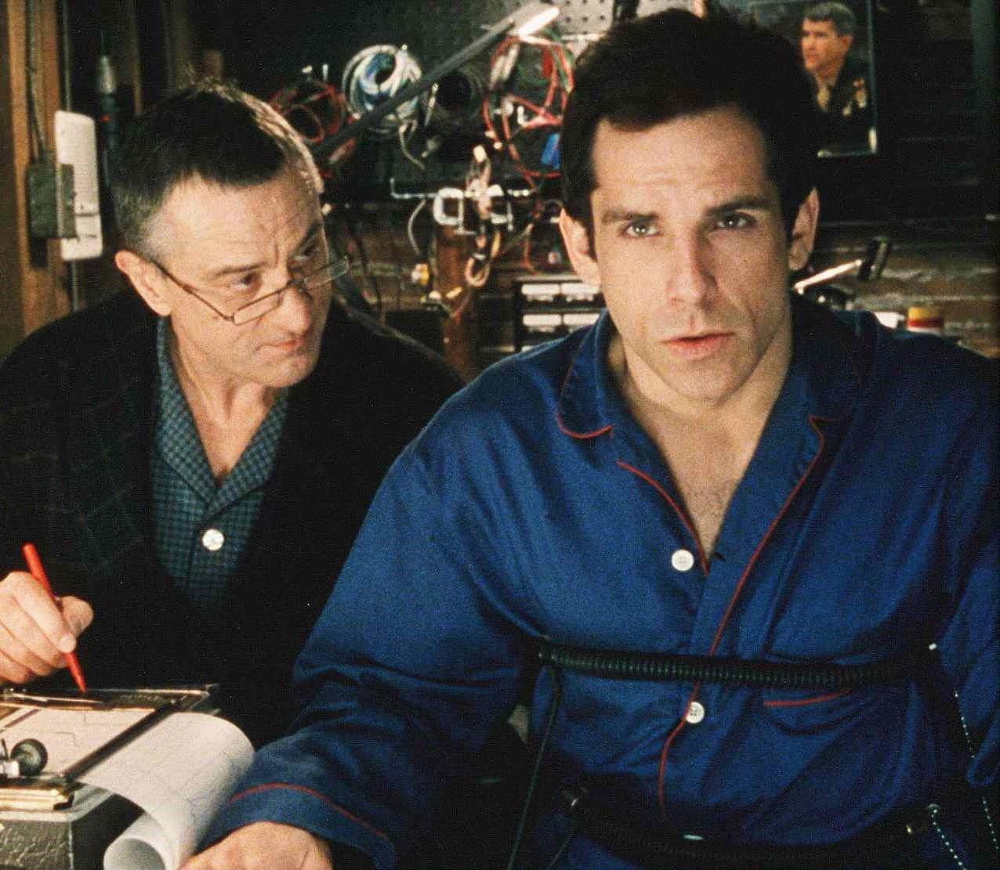

Gather 'Round the Campfire and Sing a Campfire Song
Pop Culture
The Art of Storytelling
Humans have been passing down
stories since the dawn of civilization. It is the coldest method
of passing down knowledge and information on to the next
generation. Every culture has their own unique stories which are
told as a means of entertainment, education, cultural
preservation, and instilling moral values. Typical properties of
a story include a plot, characters, and a narrative point of
view. Storytelling usually refers to oral storytelling, but
various forms of media can be used to accomplish the same
purpose.
Johannes Gutenberg invented the movable-type printing press in 1440. The invention of the printing press greatly reduced the price of printing books and increased the amount of printed information available to the masses. Today, there are various forms in which information is spread to the greater population. This is generally referred to as mass media and it includes: broadcast media, digital media, and print media. Pop culture today is heavily influenced by mass media.
Johannes Gutenberg invented the movable-type printing press in 1440. The invention of the printing press greatly reduced the price of printing books and increased the amount of printed information available to the masses. Today, there are various forms in which information is spread to the greater population. This is generally referred to as mass media and it includes: broadcast media, digital media, and print media. Pop culture today is heavily influenced by mass media.
Literature
The term literature refers to any
collection of written work, but it can also be used to refer to
written work that is considered to be an art. So it's arguable
if my blog posts can be considered as literature. However, the
plays written by William Shakesohere are literature of the
highest class. Literature is a method of recording, preserving,
and transmitting knowledge and entertainment.
Oral literature is an ancient human tradition that basically all cultures participated in. The earliest forms of poetry are believed to have been recited or sung. Many countries would tell folklore, mythologies, or proverbs. It wasn't until the fourth millennium BC when writing would become a form of keeping records. Ancient Egyptians and Sumerian literature are considered to be the world's oldest literature. Much of the ancient works were songs, prayers, and instructions. With the invention of the printing press, literature became more commonplace and accessible for the general public.
Oral literature is an ancient human tradition that basically all cultures participated in. The earliest forms of poetry are believed to have been recited or sung. Many countries would tell folklore, mythologies, or proverbs. It wasn't until the fourth millennium BC when writing would become a form of keeping records. Ancient Egyptians and Sumerian literature are considered to be the world's oldest literature. Much of the ancient works were songs, prayers, and instructions. With the invention of the printing press, literature became more commonplace and accessible for the general public.
Film
Films are works of visual art that
communicate ideas, stories, perceptions, feelings, beauty, or
atmosphere through use of motion pictures. Motion pictures are
created by video taping, drawings, CGI or computer animations.
Sometimes, a combination or all of these techniques are used to
create a motion picture.
Before digital production, still images were recorded on a strip, typically at a rate of 24 frames per second. The motion on the screen is a result of humans inability to discern individual images at high speeds. The first movies were shown publicly to one person at a time through 'peep show' devices such as the kinetoscope.
Before digital production, still images were recorded on a strip, typically at a rate of 24 frames per second. The motion on the screen is a result of humans inability to discern individual images at high speeds. The first movies were shown publicly to one person at a time through 'peep show' devices such as the kinetoscope.
Television
Television is defined as a
telecommunication medium for transmitting moving images and
sound. It is a form of mass medium used for advertising,
entertainment news, and sports. The experimental form of
television appeared first in 1927. It wasn't until after World
War II when televisions became more commonplace in homes and
businesses. In 2013, 79% of the world's households owned a
television set.
Facsimile transmission systems pioneered methods for scanning images mechanically. Alexander Bain introduced the facsimile machine between 1843 and 1846. A series of subsequent inventions would lay the groundwork for the first television set. Constantin Perskyi coined the word 'television' on August 24, 1900. The first demonstration of the live transmission of images was by Georges Rignoux and A. Fournier in Paris in 1909.
Facsimile transmission systems pioneered methods for scanning images mechanically. Alexander Bain introduced the facsimile machine between 1843 and 1846. A series of subsequent inventions would lay the groundwork for the first television set. Constantin Perskyi coined the word 'television' on August 24, 1900. The first demonstration of the live transmission of images was by Georges Rignoux and A. Fournier in Paris in 1909.

 



